実行例
どの図も、黒い線が STL の壁、赤い線が回転ゾーンの界面（faceZone）、灰色の線がセルの面です。 セル数と時間は、Rust 拡張ありで 4 コアのマシンで測った値です（品質チェックを含む）。図をクリックすると原寸で開きます。
図の上の「境界層あり」を選ぶと、同じ設定に境界層（全壁に 3 層、
"addLayers": { "nLayers": 3, "expansionRatio": 1.2, "finalLayerThickness": 0.3 }）を加えたメッシュの図に替わります。
セル数・時間・品質も層を付けたメッシュの値になり、「目標の厚さ」は層を目標の厚さまで付けられた壁の節点の割合です。
攪拌槽（examples/stirred_tank）
直径 300 mm・高さ 300 mm の平底の槽に、直径 100 mm の 4 枚パドル翼（厚さ 6 mm）と、蓋まで伸びるシャフトを置いた形状です。
STL は python make_geometry.py で作ります（solid: tankWall, bottom, top, impeller, shaft）。
回転ゾーン（meshDict.json）
- 102,430 セル
- 14.1 秒
- 直交格子 + 円筒の回転ゾーン
翼のまわりに半径 70 mm の円筒の回転ゾーンを置いた例です。円筒は八分木のカットで切断されるので、界面（赤）は粗いセルの所でも円筒面にぴったり乗ります。 翼（レベル 3）・シャフト（レベル 2）・回転ゾーンの内部（レベル 2）だけを細かくし、槽の壁はレベル 1 です。
実行コマンド
cd examples/stirred_tank
python make_geometry.py # tank.stl と rotor.stl を生成（リポジトリにも入っている）
cutmesh meshDict.json # → case/constant/polyMesh、case/constant/MRFPropertiesよく使うオプションと確認の道具
cutmesh meshDict.json -case case_test # 出力先を変える（meshDict の "case" より優先）
cutmesh meshDict.json -noCheck # 最後の品質チェックを省く（大きなメッシュで約 1 割速い）
python run.py meshDict.json # メッシュを作って断面図 slice_z.png・slice_y.png を描く
python ../../benchmark/render_mesh.py case -o case_pictures # 3D 図 overview.png・cut.png を描く
python -m cutmesh.diagnose meshDict.json case # 壁越しのリークがないかを検査する
python ../../tools/edge_check.py meshDict.json # 特徴線・円筒の縁を捉えられているか測るスライディングメッシュ（AMI）にする場合
cutmesh meshDict_ami.json # 界面を cyclicAMI パッチ rotor_AMI1 / rotor_AMI2 に分け、
# constant/dynamicMeshDict を書く → case_ami/
python -m cutmesh.ami case -out case_ami_later # 作ったメッシュを後から変換する場合
# openfoam.org では meshDict に "openfoam": "org12" を書き、OpenFOAM で
# createNonConformalCouples -overwrite rotor_nonCouple1 rotor_nonCouple2 を実行する
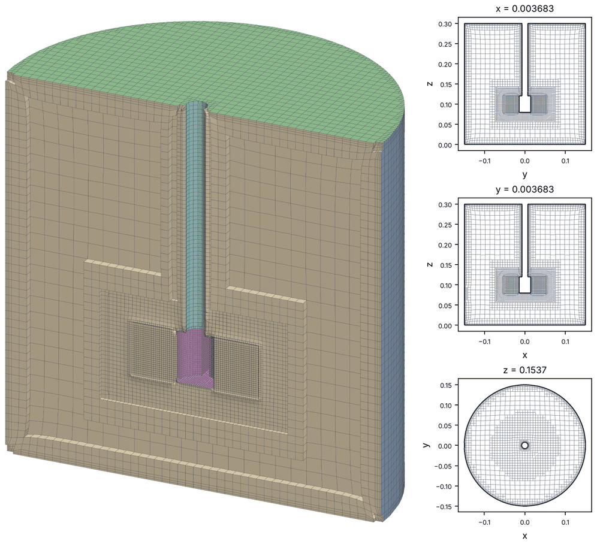
meshDict_layers.json、163,633 セル、16.6 秒、目標の厚さ 97.7%）
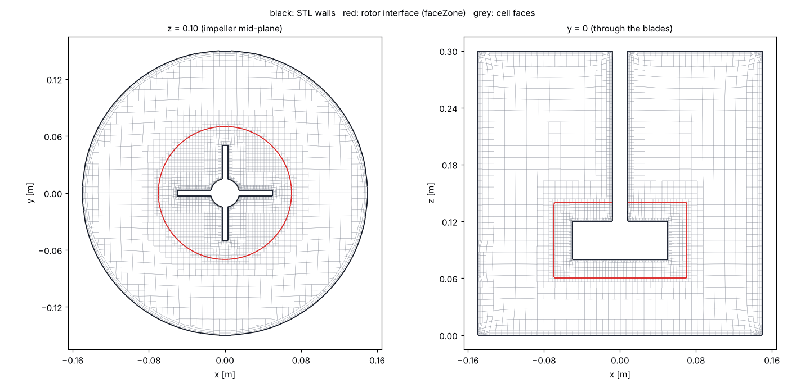
meshDict_layers.json）
meshDict.json
{
"domain": "tank.stl",
"baseCellSize": 0.0125,
"surfaceRefinement": { "default": 1, "impeller": 3, "shaft": 2 },
"featureLevel": 2,
"bufferLayers": 2,
"snapTolerance": 0.3,
"mergeRatio": 0.25,
"rotatingZones": [
{
"name": "rotor",
"cylinder": { "point1": [0, 0, 0.06], "point2": [0, 0, 0.14], "radius": 0.07 },
"surfaceLevel": 2,
"volumeLevel": 2,
"omega": 31.416
}
],
"patchTypes": { "top": "wall" },
"case": "case"
}円筒ベースメッシュ（meshDict_cylindrical.json）
- 137,144 セル
- 22 秒
- 同心ブロックのベースメッシュ
八分木の根を、軸まわりの同心ブロックにした例です。ブロックの配置は自動（中心の 2×2 の正方形と、外へ広がる同心リング）で、正方形はハブの中に入るので、流体側のセルはほぼすべて周方向に並びます。回転ゾーンの界面や槽の壁に沿ったメッシュになります。 ブロックの境界では分割数の比が整数でなくても、面を重ね合わせて適合したメッシュにします。
実行コマンド
cd examples/stirred_tank
cutmesh meshDict_cylindrical.json # → case_cylindrical/
python run.py meshDict_cylindrical.json # 断面図も描く場合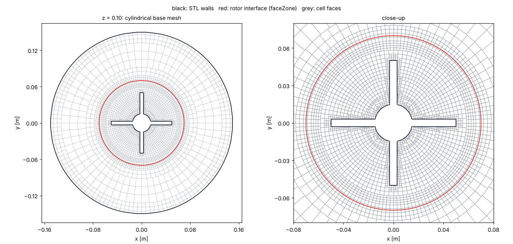
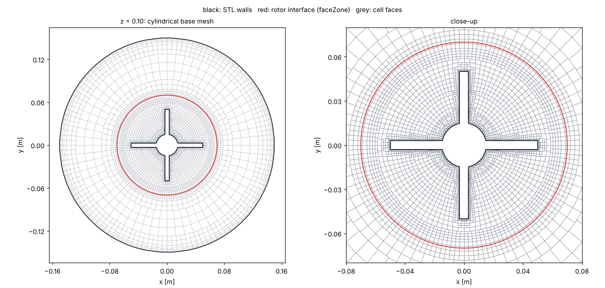
baseMesh の設定
"baseMesh": {
"type": "cylindrical",
"origin": [0, 0, 0],
"axis": [0, 0, 1],
"nz": 24
}ログに出る自動配置: 中心 2×2（半幅 11.9 mm）、半径 23.8 / 34.8 / 58.4 / 91.8 / 158.3 mm、周方向 8 / 16 / 24 / 36 / 64 分割。翼の先端（50.1 mm）・回転ゾーン（70 mm）・槽の壁（150 mm）は層の 1/3 の位置に来る。
境界層（meshDict_layers.json）
- 163,633 セル
- 16.6 秒
- 全壁に 3 層
回転ゾーンの例に、すべての壁パッチへ 3 層のプリズム層を加えた例です。回転ゾーンの界面にかかる所では、層の側面も界面の円筒面に乗ったままです。
実行コマンド
cd examples/stirred_tank
cutmesh meshDict_layers.json # 生成のあとに層を追加 → case_layers/層だけを後から付ける場合（既存のメッシュに）
cutmesh meshDict.json # 層のないメッシュ → case/
python -m cutmesh.layers case meshDict_layers.json -out case_layers_later
# 2 つ目の引数のファイルの "addLayers" を使う（省略すると既定値: 3 層）
# -out: 書き出し先（省略すると入力のメッシュを上書き）
# -noCheck: 品質チェックを省く / -ascii・-binary: 書き出し形式（既定は入力と同じ）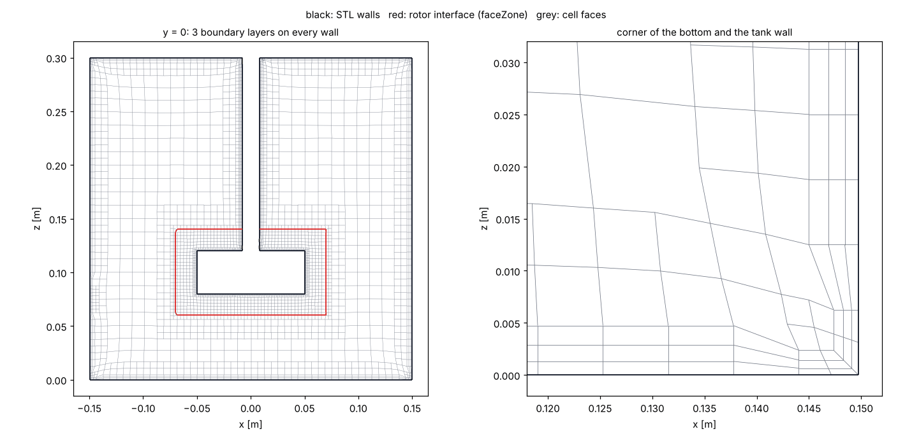
addLayers の設定
"addLayers": { "nLayers": 3, "expansionRatio": 1.2, "finalLayerThickness": 0.3 }ローター・ステーター（狭い隙間の中の界面）
- 596,160 セル
- 131 秒
- 隙間 1 mm
攪拌槽の翼のすぐ外側に、固定リング（ステーター）を置いた形状です。リングの内面は翼の先端の角から 1 mm 外にあり、
回転ゾーンの界面はその隙間の中央（翼から 0.5 mm）に置きます。界面と両側の壁の間にそれぞれセルが入るように、
wallProximity で壁に近い部分の界面だけを細かくし、autoGapRefinement で隙間に面した壁を細かくします。
STL は python make_geometry.py --stator 1 で作ります。リングの内面は solid statorInner、それ以外は stator です。
実行コマンド
cd examples/stirred_tank
python make_geometry.py --stator 1 # tank_stator_1mm.stl を生成（--stator の後は隙間の幅 [mm]）
cutmesh meshDict_stator_1mm.json # → case_stator_1mm/（約 60 万セル、約 2 分、メモリ 約 5 GB）
python -m cutmesh.diagnose meshDict_stator_1mm.json case_stator_1mm # 隙間で壁越しにつながっていないか隙間 0.5 mm の場合
python make_geometry.py --stator 0.5 # tank_stator_0.5mm.stl
cutmesh meshDict_stator.json # 約 200 万セル。15 GB を超えるメモリが必要

隙間が狭いほどセル数が急に増えます。界面と壁の間（隙間の半分）に 1 セル以上入れるため、隙間の半分程度のセルが界面の全周に並びます。
この形状では、隙間 1 mm で約 60 万セル、隙間 0.5 mm で約 200 万セル（15 GB のメモリでは足りない）になります。
MRF で計算するなら、"conforming": false（セル中心で回転ゾーンを選ぶ）にすれば界面のための細分化が要りません（AMI には使えません）。
meshDict_stator_1mm.json
{
"domain": "tank_stator_1mm.stl",
"baseCellSize": 0.0125,
"surfaceRefinement": { "default": 1, "impeller": 3, "shaft": 2, "stator": 3, "statorInner": 3 },
"featureLevel": 2,
"bufferLayers": 2,
"snapTolerance": 0.3,
"mergeRatio": 0.25,
"autoGapRefinement": { "cellsAcross": 2, "maxLevel": 5 },
"rotatingZones": [
{
"name": "rotor",
"cylinder": { "point1": [0, 0, 0.074], "point2": [0, 0, 0.126], "radius": 0.05059 },
"surfaceLevel": 3,
"volumeLevel": 2,
"wallProximity": { "distance": 0.001, "level": 5 },
"omega": 31.416
}
],
"patchTypes": { "top": "wall" },
"case": "case_stator_1mm"
}隙間 0.5 mm の設定は examples/stirred_tank/meshDict_stator.json にあります（maxLevel・level を 6 にする）。
形状のテスト集（benchmark/）
ベンチマークの人工形状（python benchmark/make_synthetic.py で生成）から 5 つです。どれも外接箱の最長辺の 1/24 をベースセルにし、
表面をレベル 2 まで細かくしています。各図は、手前半分のセルを取り除いた 3D 図と、中央の 3 断面です。
実行コマンド（リポジトリの直下で）
python benchmark/make_synthetic.py # 人工形状の STL を benchmark/data/synthetic/ に生成
python benchmark/run_bench.py benchmark/suites/synthetic.json --only sphere --only torus --keep --out benchmark/results/shapes
# --only: ケース名で絞る（ワイルドカード可: "thin_*"） / --keep: 合格したケースの polyMesh も残す
# --out: 出力先 → benchmark/results/shapes/cases/sphere/ に case/constant/polyMesh、
# meshDict.json（使った設定）、overview.png・cut.png（画像）、log.txt（cutmesh のログ）
# benchmark/results/shapes/summary.md に判定・セル数・品質・時間の一覧ほかのオプション
python benchmark/run_bench.py benchmark/suites/synthetic.json -j 4 # 26 形状すべてを 4 並列で
python benchmark/run_bench.py benchmark/suites/synthetic.json --cells-across 48 --only cube_rotated # 解像度を 2 倍に
python benchmark/run_bench.py benchmark/suites/synthetic.json --set addLayers='{"nLayers": 3}' # 全ケースに境界層
python benchmark/run_bench.py benchmark/suites/synthetic.json --baseline benchmark/baselines/synthetic.json # 基準と比べる
python benchmark/stl_check.py benchmark/data/synthetic/torus.stl # STL の診断だけ（開いた辺など）
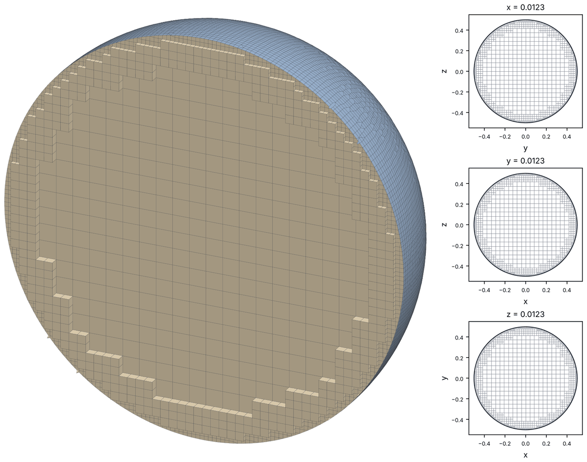


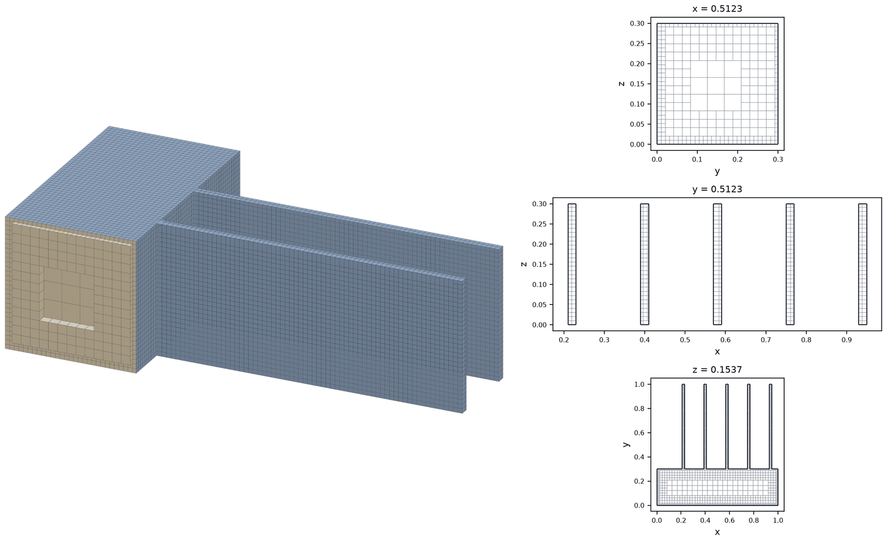

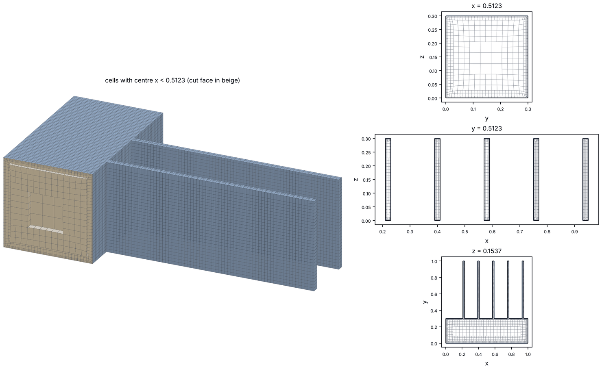

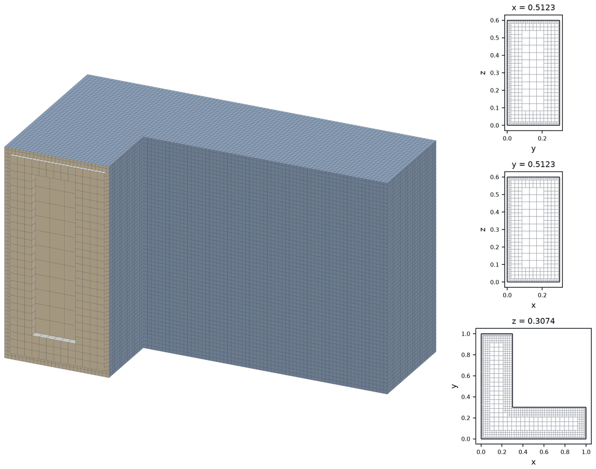

格子に沿わないエッジ（凸エッジの厳密カット）
エッジが八分木の格子に沿わない形では、エッジのすぐ横の頂点が両側の壁に寄せられ、エッジと頂点の間の流体がセルごとに欠けて、
エッジが鋸歯状になっていました。凸のエッジの近くのセルを STL の平面で直接切る処理（exactFeatureCut、既定で有効）で、
エッジに沿ったメッシュになります。下は cube_rotated の壁面を 2 方向から見た図です。


凸のエッジが凹のエッジや曲面と交わる所の近くでは、平面で切ると壊れたセルができることがあるので、従来のカットに戻します（そこには面取りが残ることがあります）。 円錐の底の縁のように、曲面と平面が交わるエッジは対象外です。
このほかにも、薄い壁・汚れた STL（重複した三角形、開いた辺、向きの混在）など 26 の形状で、失敗・警告・品質の低下を一覧にできます （benchmark/README.md）。
実用的な形状（benchmark/suites/showcase.json）
配管・ダクト・外部流れなど、実際の流れの問題に近い 8 つの形状です。どれも入口・出口を別の solid（パッチ）にした STL で、
python benchmark/make_synthetic.py で生成します。8 ケースとも、警告・品質フラグなしで PASS します
（非直交性 > 70° と歪度 > 4 の面が 0、体積の誤差は STL の 0.3% 以内）。図は断面（黒: STL の壁、灰色: セルの面）です。
実行コマンド（リポジトリの直下で）
python benchmark/make_synthetic.py # STL を benchmark/data/synthetic/ に生成（pipe_elbow.stl など）
python benchmark/run_bench.py benchmark/suites/showcase.json -j 4 --keep --out benchmark/results/showcase
# → benchmark/results/showcase/cases/<名前>/case/constant/polyMesh と meshDict.json（使った設定）
python benchmark/run_bench.py benchmark/suites/showcase.json --only venturi --keep # 1 つだけケースごとの meshDict（baseCellSize・パッチごとの細分化レベル・patchTypes）は
benchmark/suites/showcase.json にあります。cutmesh を直接使うなら、出力先の meshDict.json をそのまま
cutmesh meshDict.json に渡せます。


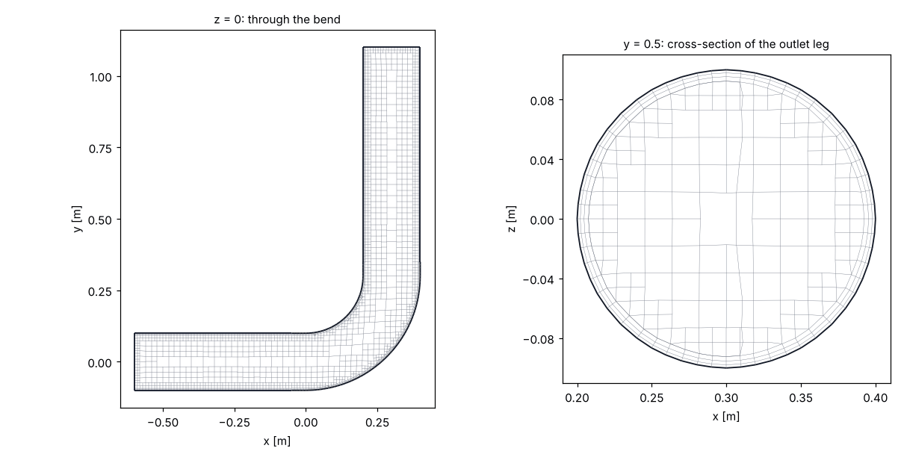

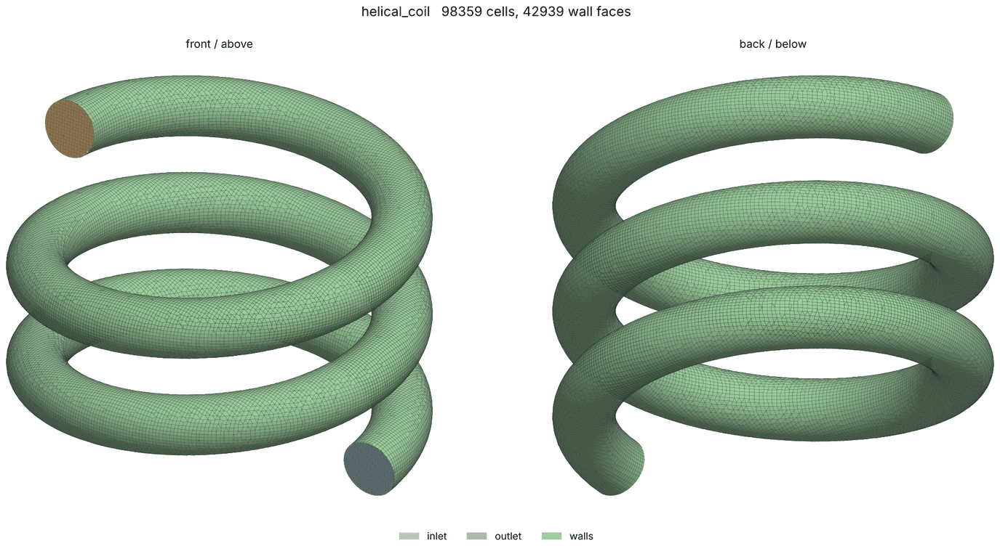

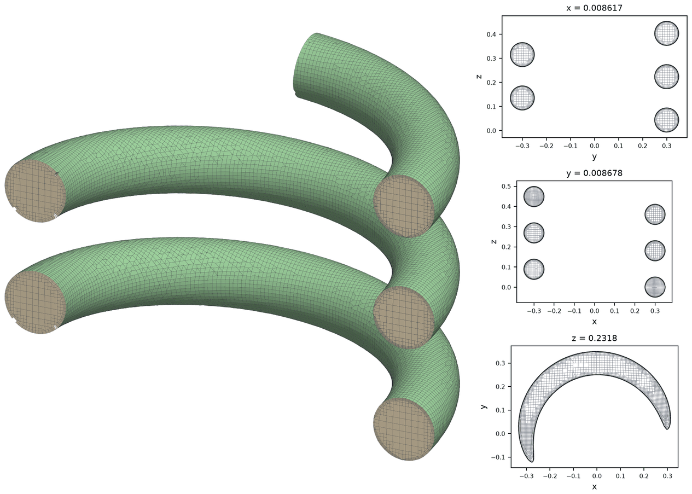


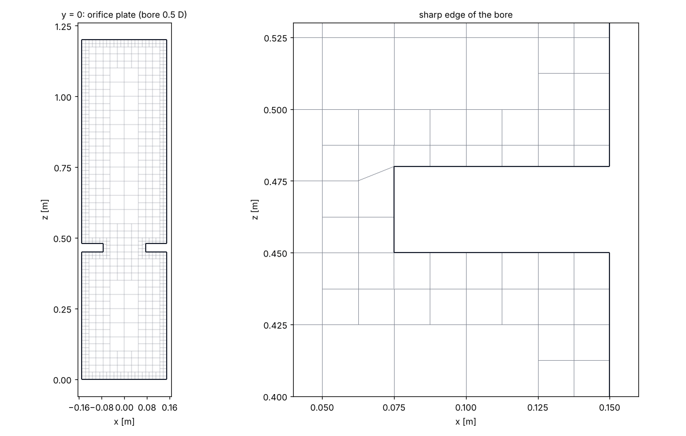


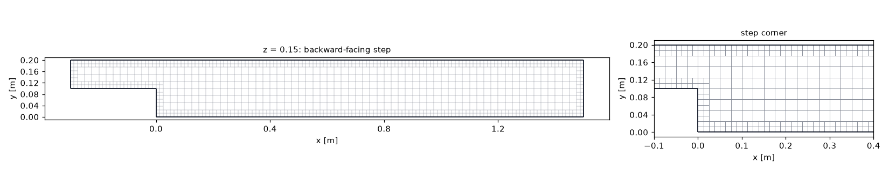

symmetry パッチ（19,440 セル、2.7 秒、最大非直交 25°境界層あり、40,752 セル、3.2 秒、目標の厚さ 100.0%、最大非直交 40°）
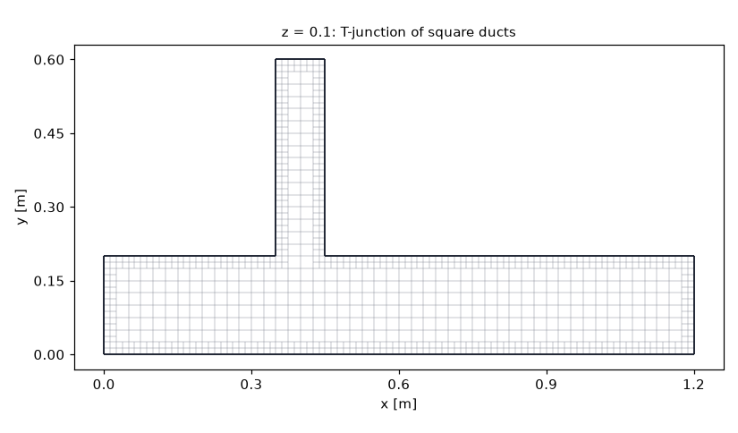

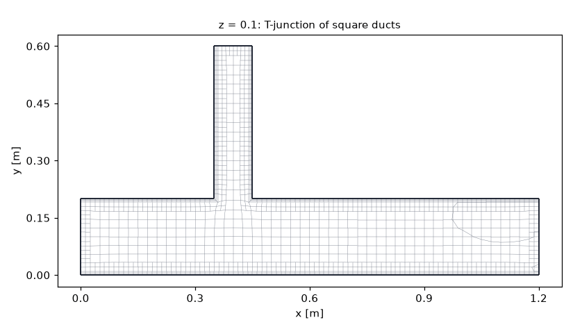
inletMain・inletBranch の 2 つ（15,736 セル、2.8 秒、最大非直交 25°境界層あり、38,392 セル、3.1 秒、目標の厚さ 100.0%、最大非直交 62°）


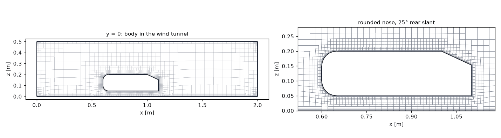
例: body_in_tunnel の meshDict
{
"domain": "body_in_tunnel.stl",
"baseCellSize": 0.08,
"surfaceRefinement": { "default": 0, "floor": 1, "body": 4 },
"patchTypes": { "inlet": "patch", "outlet": "patch", "walls": "symmetry" },
"case": "case"
}solid は inlet, outlet, floor, walls（風洞の側面と天井）, body（法線は物体の内側＝流体の外向き）です。
画像の作り方
このページの画像は、次のスクリプトで作り直せます（境界層なし・ありの両方で、Rust 拡張ありで約 15 分）。
python tools/make_docs_images.py # すべて → docs/images/
python tools/make_docs_images.py --only stator # 一部だけ（tank, cylindrical, stator, shapes, showcase）
python tools/make_docs_images.py --variant plain # 境界層なしの図だけ（layers: ありの図だけ。ファイル名の末尾が _layers）手元のメッシュの画像は python benchmark/render_mesh.py CASE（3D 図と断面図）、または
examples/stirred_tank/run.py の cutmesh.viz.plot_slice（断面図）で描けます。